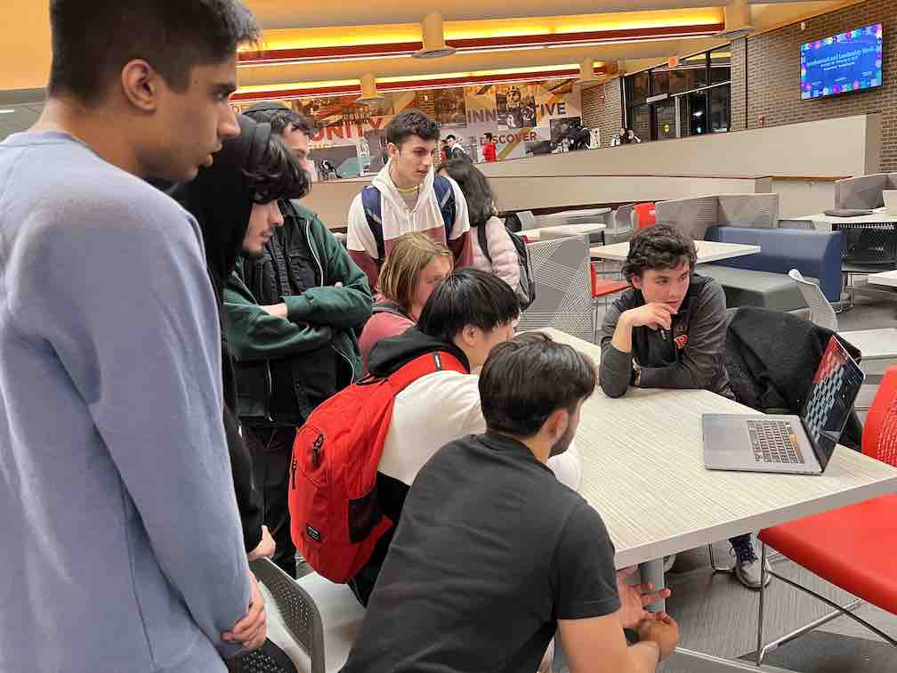
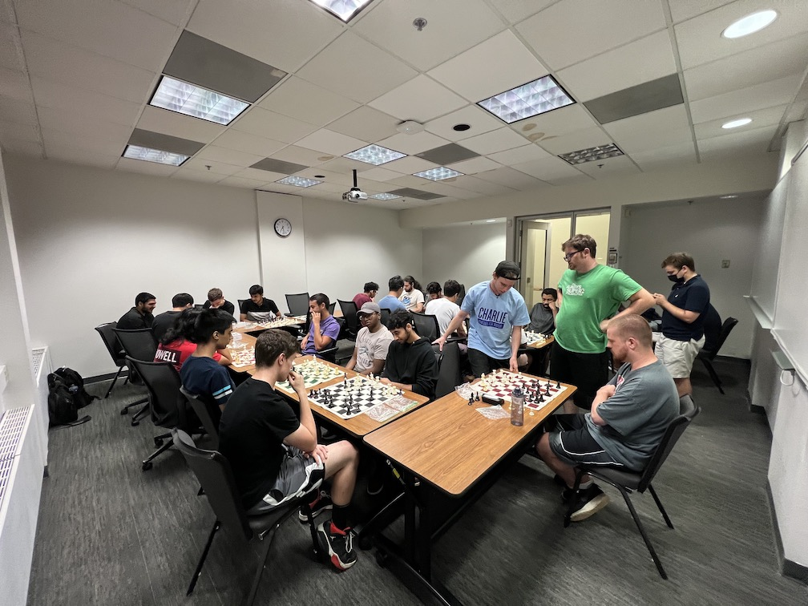
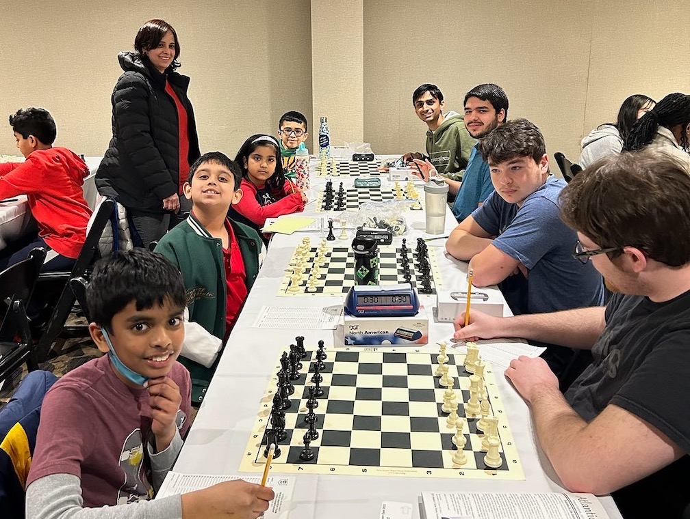
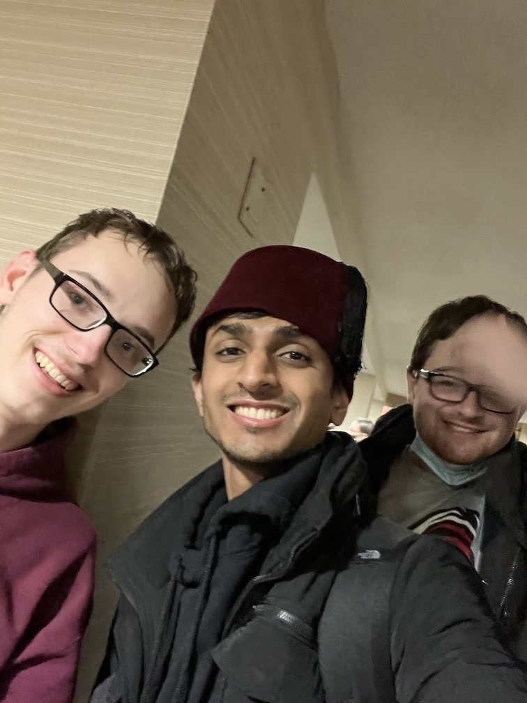
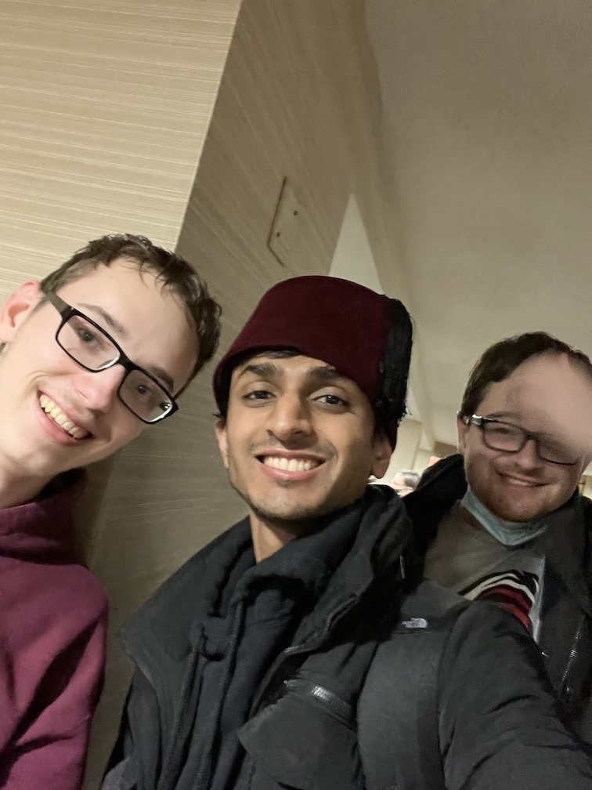

Pictorial
This is a gallery of some of the photos that I have taken for myself and for the Rutgers Chess Club. This pictorial is split into two sections: chess club meeting photos and tournament photos. These are the two most important aspects of the club and it’s where most of the effort, time, and money is spent. The club holds many events throughout the year, and these photos highlight some of the most important ones.
The first section shows what the general meetings are like for the club. There are all kinds of people from all different majors. The attendants of the meetings are all usually students, but sometimes we get alumni and professors attending the meetings as well. The images show how the meetings are run. We rent out a room in the student center with tables and chairs and we set up the boards as shown in the photos. Sometimes, we have study sessions where we have people try to solve the same position together. Running the club has become a large part of my senior year and it is one of the most memorable things from my senior year at Rutgers University.
The second section shows what the tournaments are like. Every year, the club sends several people to represent Rutgers University at a collegiate tournament called USATE. The images of the boards are images of checkmates or resignations where I won. I take pictures of these because it is a special moment to me where after a few hours of playing I achieved a victory. There is also an image of my friends and I playing a few games in between rounds and another with all of us in a group photo.
One of my favorite photos here is a photo with myself, my Vice President Dustin, and a National Master named Logozar that we met at the tournament. He was very good and it was a great experience getting to meet and play him.
Meeting Photos
 Tournament Photos
 
